🏆 EURO 2024 Matches
| Date | Fixture Bold-faced team is selected by AIGoalie to win. | Odds Pre-match odds of the selected team winning. Note that odds are fetched once per day at 00:00 GMT, meaning some matches may have live odds. | Win How confident AIGoalie is that the selected team will win. Low confidence indicates unpredictability of the match. ▼ | Result Whether the selected team won, drew, or lost. | Over The minimum number of goals predicted by AIGoalie. ⚽ = over 0.5 ⚽⚽ = over 1.5 ⚽⚽⚽ = over 2.5 ... ► |
Alerts Home 🏥 = Considerable injuries 🏥🏥 = Major injuries 📉 = Dip in form Note, you may see injuries when expanding match but no alert here, meaning the model does not consider them important. |
Alerts Away 🏥 = Considerable injuries 🏥🏥 = Major injuries 📉 = Dip in form Note, you may see injuries when expanding match but no alert here, meaning the model does not consider them important. |
|
|---|---|---|---|---|---|---|---|---|
| Sun. 16 Jun. | Serbia 0:1 England Form: WLWL Form: DWLW |
-1.57 vs 1.53 | 1.49 | 75% | 1 | ⚽ 1.02 |
📉 Home team has a dip in form recently | 📉 Away team has a dip in form recently |
| Sun. 16 Jun. | Poland 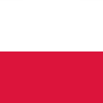 1:2 Netherlands Form: WWLL Form: WWWD |
-0.86 vs 0.8 | 1.58 | 62% | 1 | ⚽ 1.66 |
📉 Home team has a dip in form recently | |
| Sun. 16 Jun. | Slovenia 1:1 Denmark Form: WWDD Form: WWWD |
-0.33 vs 0.31 | 1.75 | 35% | 0.5 | 😴 0.85 |
📉 Home team has a dip in form recently |
🏆 Copa America 2024 Matches
| Date | Fixture Bold-faced team is selected by AIGoalie to win. | Odds Pre-match odds of the selected team winning. Note that odds are fetched once per day at 00:00 GMT, meaning some matches may have live odds. | Win How confident AIGoalie is that the selected team will win. Low confidence indicates unpredictability of the match. ▼ | Result Whether the selected team won, drew, or lost. | Over The minimum number of goals predicted by AIGoalie. ⚽ = over 0.5 ⚽⚽ = over 1.5 ⚽⚽⚽ = over 2.5 ... ► |
Alerts Home 🏥 = Considerable injuries 🏥🏥 = Major injuries 📉 = Dip in form Note, you may see injuries when expanding match but no alert here, meaning the model does not consider them important. |
Alerts Away 🏥 = Considerable injuries 🏥🏥 = Major injuries 📉 = Dip in form Note, you may see injuries when expanding match but no alert here, meaning the model does not consider them important. |
|---|
🌍 Global Matches
| Date | Fixture Bold-faced team is selected by AIGoalie to win. | Odds Pre-match odds of the selected team winning. Note that odds are fetched once per day at 00:00 GMT, meaning some matches may have live odds. | Win How confident AIGoalie is that the selected team will win. Low confidence indicates unpredictability of the match. ▼ | Result Whether the selected team won, drew, or lost. | Over The minimum number of goals predicted by AIGoalie. ⚽ = over 0.5 ⚽⚽ = over 1.5 ⚽⚽⚽ = over 2.5 ... ► |
Alerts Home 🏥 = Considerable injuries 🏥🏥 = Major injuries 📉 = Dip in form Note, you may see injuries when expanding match but no alert here, meaning the model does not consider them important. |
Alerts Away 🏥 = Considerable injuries 🏥🏥 = Major injuries 📉 = Dip in form Note, you may see injuries when expanding match but no alert here, meaning the model does not consider them important. |
|
|---|---|---|---|---|---|---|---|---|
| Sun. 16 Jun. | FC KTP 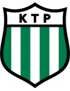 1:5 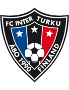 FC Inter Turku Form: WDWL Form: LWWL |
-4.54 vs 3.94 | n/a | 99% | 1 | ⚽⚽⚽ 3.07 |
📉 Home team has a dip in form recently | 📉 Away team has a dip in form recently |
| Sun. 16 Jun. | Valmiera FC II 15:00 SK Super Nova Form: WWLW Form: WWWW |
1.91 vs -2.58 | n/a | 79% | None | ⚽ 1.57 |
📉 Home team has a dip in form recently | |
| Sun. 16 Jun. | Auckland City FC 2:1 Hamilton Wanderers Form: WWWD Form: LLLL |
1.88 vs -2.88 | n/a | 79% | 1 | ⚽⚽ 2.6 |
📉 Away team has a dip in form recently | |
| Sun. 16 Jun. | Istiqlol Dushanbe 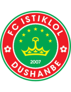 2:0 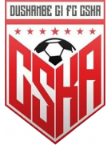 ZSKA Dushanbe Form: WWWW Form: WWWD |
1.79 vs -2.29 | n/a | 78% | 1 | 😴 0.56 |
||
| Sun. 16 Jun. | Lautoka FC 4:0 Nasinu FC Form: LLWW Form: WLWW |
1.66 vs -2.16 | n/a | 77% | 1 | ⚽⚽⚽ 3.77 |
📉 Home team has a dip in form recently | 📉 Away team has a dip in form recently |
| Sun. 16 Jun. | Serbia 0:1 England Form: WLWL Form: DWLW |
-1.57 vs 1.53 | 1.49 | 75% | 1 | ⚽ 1.02 |
📉 Home team has a dip in form recently | 📉 Away team has a dip in form recently |
| Sun. 16 Jun. | FCI Levadia 2:1 Jalgpallikool Tammeka Form: WWWW Form: LWLL |
1.31 vs -2.17 | n/a | 73% | 1 | ⚽⚽ 2.59 |
📉 Away team has a dip in form recently | |
| Sun. 16 Jun. | Indy Eleven 1:0 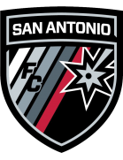 San Antonio FC Form: WWWW Form: LDLL |
1.23 vs -2.09 | n/a | 72% | 1 | 😴 0.76 |
📉 Away team has a dip in form recently | |
| Sun. 16 Jun. | CA Peñarol 1:1 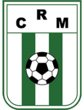 Racing Club de Montevideo Form: WWLD Form: LDWD |
1.2 vs -1.86 | n/a | 72% | 0.5 | ⚽ 1.43 |
📉 Home team has a dip in form recently | 📉 Away team has a dip in form recently |
| Sun. 16 Jun. | Sporting Lagos FC 2:1 Enyimba Aba Form: LDDL Form: WWLD |
-1.82 vs 1.02 | n/a | 70% | 0 | ⚽ 1.11 |
📉 Home team has a dip in form recently | 📉 Away team has a dip in form recently |
| Sun. 16 Jun. | EB/Streymur 1:2 KÍ Klaksvík Form: WLLW Form: WWLL |
-1.47 vs 0.89 | n/a | 66% | 1 | ⚽⚽ 2.05 |
📉 Home team has a dip in form recently | 📉 Away team has a dip in form recently |
| Sun. 16 Jun. | Asante Kotoko SC 3:1 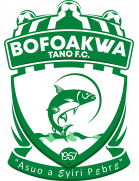 Bofoakwa Tano FC Form: WLWW Form: LLLL |
0.87 vs -1.87 | n/a | 65% | 1 | 😴 0.57 |
📉 Home team has a dip in form recently | 📉 Away team has a dip in form recently |
| Sun. 16 Jun. | Ming Chuan University 0:1 Tainan City Taiwan Steel Form: LWLL Form: LWDD |
-1.53 vs 0.81 | n/a | 62% | 1 | ⚽⚽⚽ 3.16 |
📉 Home team has a dip in form recently | 📉 Away team has a dip in form recently |
| Sun. 16 Jun. | Arsenal Dzerzhinsk 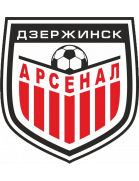 2:0 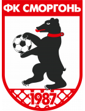 FK Smorgon Form: WLWW Form: DDLW |
0.8 vs -1.72 | n/a | 62% | 1 | ⚽⚽⚽ 3.53 |
📉 Home team has a dip in form recently | 📉 Away team has a dip in form recently |
| Sun. 16 Jun. | Poland 1:2 Netherlands Form: WWLL Form: WWWD |
-0.86 vs 0.8 | 1.58 | 62% | 1 | ⚽ 1.66 |
📉 Home team has a dip in form recently | |
| Sun. 16 Jun. | FK Auda 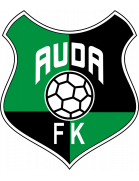 4:0 FK Metta Form: WWWL Form: DLLL |
0.75 vs -1.57 | 1.36 | 60% | 1 | ⚽ 1.87 |
📉 Home team has a dip in form recently | 📉 Away team has a dip in form recently |
| Sun. 16 Jun. | Futuro 1:0 New Taipei City Hang Yuan FC Form: LLDW Form: DLDW |
0.72 vs -1.51 | n/a | 59% | 1 | ⚽⚽ 2.17 |
📉 Home team has a dip in form recently | 📉 Away team has a dip in form recently |
| Sun. 16 Jun. | Pirata FC 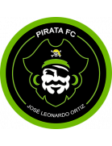 19:15 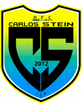 FC Carlos Stein Form: LLWD Form: WLWL |
0.72 vs -1.72 | n/a | 59% | None | ⚽⚽⚽⚽ 4.28 |
📉 Home team has a dip in form recently | 📉 Away team has a dip in form recently |
| Sun. 16 Jun. | Sacramento Republic FC 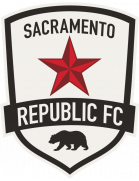 2:3 Oakland Roots SC Form: DWDL Form: WLWW |
0.71 vs -1.34 | 1.58 | 58% | 0 | ⚽ 1.25 |
📉 Home team has a dip in form recently | 📉 Away team has a dip in form recently |
| Sun. 16 Jun. | Gimpo FC 1:0 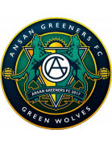 Ansan Greeners Form: WWLW Form: DLWL |
0.64 vs -1.43 | n/a | 56% | 1 | ⚽ 1.15 |
📉 Home team has a dip in form recently | 📉 Away team has a dip in form recently |
| Sun. 16 Jun. | JEF United Chiba 1:0 Tokushima Vortis Form: WWWW Form: DWLW |
0.62 vs -1.37 | 1.79 | 55% | 1 | ⚽ 1.85 |
📉 Away team has a dip in form recently | |
| Sun. 16 Jun. | Atlanta United FC 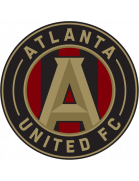 2:2 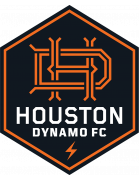 Houston Dynamo FC Form: LWLD Form: DLWD |
0.58 vs -1.29 | n/a | 53% | 0.5 | ⚽⚽ 2.98 |
📉 Home team has a dip in form recently | 📉 Away team has a dip in form recently |
| Sun. 16 Jun. | Sogdiana Jizzakh 1:0 Nasaf Qarshi Form: LWLW Form: WWLW |
-1.16 vs 0.56 | n/a | 53% | 0 | ⚽ 1.63 |
📉 Home team has a dip in form recently | 📉 Away team has a dip in form recently |
| Sun. 16 Jun. | Medeama SC 0:1 Karela United FC Form: WLLL Form: WLWW |
0.56 vs -1.38 | n/a | 52% | 0 | ⚽ 1.04 |
📉 Home team has a dip in form recently | 📉 Away team has a dip in form recently |
| Sun. 16 Jun. | Defensor Sporting Club 1:1 CA Progreso Form: WWWD Form: LLWD |
0.52 vs -1.37 | n/a | 51% | 0.5 | ⚽⚽ 2.31 |
🏥 📉 Away team has considerable injuries and a dip in form recently | |
| Sun. 16 Jun. | North Carolina FC 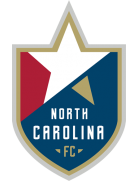 2:0 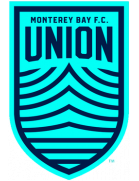 Monterey Bay FC Form: WDWL Form: LLDW |
0.51 vs -1.28 | n/a | 50% | 1 | ⚽ 1.76 |
📉 Home team has a dip in form recently | 📉 Away team has a dip in form recently |
| Sun. 16 Jun. | Sport Club do Recife 22:30 Mirassol Futebol Clube (SP) Form: WWLW Form: WWLL |
0.5 vs -1.31 | n/a | 50% | None | ⚽ 1.69 |
📉 Home team has a dip in form recently | 📉 Away team has a dip in form recently |
| Sun. 16 Jun. | Los Angeles Galaxy 4:2 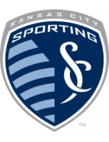 Sporting Kansas City Form: DWWL Form: LLLW |
0.49 vs -1.28 | n/a | 49% | 1 | ⚽⚽⚽ 3.02 |
📉 Home team has a dip in form recently | 📉 Away team has a dip in form recently |
| Sun. 16 Jun. | Ehime FC 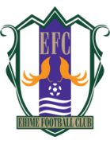 3:0 Shimizu S-Pulse Form: LWWW Form: WLWW |
-1.01 vs 0.48 | n/a | 48% | 0 | ⚽⚽ 2.3 |
📉 Away team has a dip in form recently | |
| Sun. 16 Jun. | Kashima Antlers 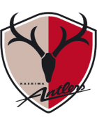 1:1 Albirex Niigata Form: WWWD Form: WDWD |
0.48 vs -1.13 | n/a | 48% | 0.5 | ⚽⚽ 2.11 |
📉 Away team has a dip in form recently | |
| Sun. 16 Jun. | BG Pathum United 1:0 Muangthong United Form: WWWW Form: WWWL |
0.46 vs -1.1 | 1.29 | 47% | 1 | ⚽⚽⚽ 3.25 |
📉 Away team has a dip in form recently | |
| Sun. 16 Jun. | Fluminense Football Club 1:2 Atlético Clube Goianiense Form: WDLL Form: WLDW |
0.46 vs -1.04 | n/a | 46% | 0 | ⚽⚽ 2.26 |
📉 Home team has a dip in form recently | 📉 Away team has a dip in form recently |
| Sun. 16 Jun. | Egersunds IK 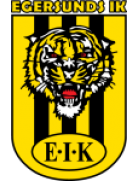 1:1 Vålerenga Fotball Elite Form: WLWD Form: WWWW |
-0.91 vs 0.4 | n/a | 42% | 0.5 | ⚽⚽⚽ 3.77 |
📉 Home team has a dip in form recently | |
| Sun. 16 Jun. | Papua New Guinea 1:5 Fiji Form: DLLD Form: LWWW |
-0.64 vs 0.39 | n/a | 42% | 1 | ⚽⚽⚽⚽ 4.72 |
📉 Home team has a dip in form recently | |
| Sun. 16 Jun. | United City FC 0:0 Davao Aguilas FC Form: DWDW Form: DWLW |
0.38 vs -0.88 | n/a | 41% | 0.5 | 😴 0.8 |
📉 Away team has a dip in form recently | |
| Sun. 16 Jun. | Orsomarso SC 21:30 Llaneros FC Form: WLDL Form: LWDW |
-1.03 vs 0.37 | 1.92 | 39% | None | ⚽ 1.19 |
📉 Home team has a dip in form recently | |
| Sun. 16 Jun. | Accra Great Olympics 3:0 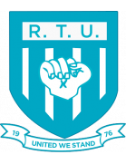 Real Tamale United Form: WDDW Form: LLLL |
0.36 vs -1.3 | n/a | 39% | 1 | 😴 0.99 |
📉 Home team has a dip in form recently | 📉 Away team has a dip in form recently |
| Sun. 16 Jun. | Slavia Mozyr 1:1 FK Minsk Form: DDDW Form: LDDL |
0.34 vs -1.23 | n/a | 38% | 0.5 | 😴 0.87 |
📉 Home team has a dip in form recently | 📉 Away team has a dip in form recently |
| Sun. 16 Jun. | Tahiti 2:0 Samoa Form: WWWD Form: WWLL |
0.33 vs -1.0 | n/a | 36% | 1 | ⚽⚽⚽ 3.58 |
📉 Away team has a dip in form recently | |
| Sun. 16 Jun. | Volna Pinsk 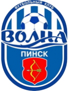 2:0 FK Baranovichi Form: WWDL Form: WWLW |
0.32 vs -1.21 | n/a | 36% | 1 | ⚽ 1.51 |
📉 Home team has a dip in form recently | 📉 Away team has a dip in form recently |
| Sun. 16 Jun. | Jeonbuk Hyundai Motors 2:2 Incheon United Form: LDLL Form: DDLD |
0.32 vs -1.08 | n/a | 35% | 0.5 | ⚽ 1.72 |
📉 Home team has a dip in form recently | 📉 Away team has a dip in form recently |
| Sun. 16 Jun. | Slovenia 1:1 Denmark Form: WWDD Form: WWWD |
-0.33 vs 0.31 | 1.75 | 35% | 0.5 | 😴 0.85 |
📉 Home team has a dip in form recently | |
| Sun. 16 Jun. | Taipei Vikings 0:4 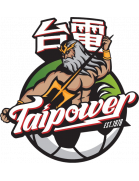 Taiwan Power Company Form: DW Form: WWDD |
-0.75 vs 0.31 | n/a | 35% | 1 | ⚽⚽ 2.14 |
📉 Home team has a dip in form recently | 📉 Away team has a dip in form recently |
| Sun. 16 Jun. | Berekum Chelsea FC 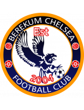 2:2 Heart of Lions FC Form: LWWD Form: WWWD |
0.29 vs -1.17 | n/a | 33% | 0.5 | ⚽ 1.07 |
||
| Sun. 16 Jun. | Deportivo Coopsol 21:30 Deportivo Municipal Form: WDDL Form: LWWD |
0.28 vs -0.95 | 1.06 | 32% | None | ⚽ 1.61 |
📉 Home team has a dip in form recently | |
| Sun. 16 Jun. | Grobinas SC/LFS 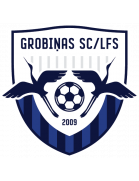 4:2 FS Jelgava Form: LLWL Form: LDLL |
0.26 vs -1.06 | n/a | 31% | 1 | ⚽⚽ 2.41 |
📉 Home team has a dip in form recently | 📉 Away team has a dip in form recently |
| Sun. 16 Jun. | Hartford Athletic 2:0 Pittsburgh Riverhounds SC Form: WDLW Form: LLDL |
0.26 vs -0.98 | n/a | 31% | 1 | ⚽ 1.47 |
📉 Home team has a dip in form recently | 📉 Away team has a dip in form recently |
| Sun. 16 Jun. | Kongsvinger IL 0:5 Åsane Fotball Form: WDLL Form: WLWL |
0.24 vs -1.12 | 1.4 | 29% | 0 | ⚽⚽ 2.46 |
📉 Home team has a dip in form recently | 📉 Away team has a dip in form recently |
| Sun. 16 Jun. | CA Rosario Central postponed CA Barracas Central Form: WLDD Form: DLLL |
0.22 vs -1.04 | n/a | 28% | None | ⚽ 1.55 |
📉 Home team has a dip in form recently | 📉 Away team has a dip in form recently |
| Sun. 16 Jun. | FK Eskhata 7:0 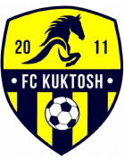 FK Kuktosh Form: DLWW Form: LLLL |
0.22 vs -0.97 | n/a | 28% | 1 | ⚽⚽ 2.66 |
📉 Home team has a dip in form recently | 📉 Away team has a dip in form recently |
| Sun. 16 Jun. | Helsingborgs IF 1:0 Örebro SK Form: DLLW Form: DLLD |
0.22 vs -1.04 | 1.85 | 28% | 1 | ⚽ 1.77 |
📉 Home team has a dip in form recently | 📉 Away team has a dip in form recently |
| Sun. 16 Jun. | FK Orsha 1:0 Dinamo 2 Minsk Form: WDDD Form: WLLW |
0.22 vs -0.82 | n/a | 27% | 1 | ⚽ 1.25 |
📉 Home team has a dip in form recently | 📉 Away team has a dip in form recently |
| Sun. 16 Jun. | Shakhter Soligorsk 0:0 Naftan Novopolotsk Form: DDDW Form: LWDL |
0.21 vs -1.08 | n/a | 27% | 0.5 | ⚽⚽ 2.55 |
📉 Home team has a dip in form recently | 📉 Away team has a dip in form recently |
| Sun. 16 Jun. | FC Flora Tallinn U21 4:0 JK Tabasalu Form: WDLL Form: LLLW |
0.21 vs -0.82 | n/a | 27% | 1 | ⚽⚽⚽⚽ 4.27 |
📉 Home team has a dip in form recently | 📉 Away team has a dip in form recently |
| Sun. 16 Jun. | Charlotte FC 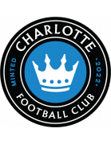 1:0 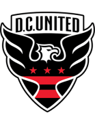 D.C. United Form: DLWW Form: DLDL |
0.2 vs -1.17 | 1.91 | 26% | 1 | ⚽ 1.57 |
📉 Home team has a dip in form recently | 📉 Away team has a dip in form recently |
| Sun. 16 Jun. | Panama 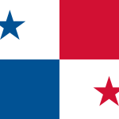 0:1 Paraguay Form: LLWW Form: DLDL |
0.19 vs -1.52 | n/a | 25% | 0 | 😴 0.13 |
📉 Home team has a dip in form recently | 🏥🏥 📉 Away team has MAJOR injuries and a dip in form recently |
| Sun. 16 Jun. | Avispa Fukuoka 2:0 Sagan Tosu Form: WWWW Form: LLWL |
0.19 vs -1.15 | n/a | 25% | 1 | ⚽⚽ 2.19 |
📉 Away team has a dip in form recently | |
| Sun. 16 Jun. | Mito HollyHock 1:0 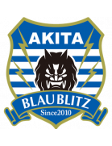 Blaublitz Akita Form: LLLW Form: DDDL |
0.19 vs -0.77 | n/a | 25% | 1 | 😴 0.82 |
📉 Home team has a dip in form recently | 📉 Away team has a dip in form recently |
| Sun. 16 Jun. | Ecuador 2:1 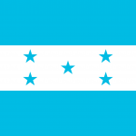 Honduras Form: WLLW Form: DWWL |
0.17 vs -1.3 | 1.27 | 23% | 1 | 😴 0.56 |
📉 Home team has a dip in form recently | 📉 Away team has a dip in form recently |
| Sun. 16 Jun. | Stallion Laguna FC 7:1 Tuloy FC Form: DLWL Form: WLLL |
0.15 vs -0.58 | n/a | 22% | 1 | ⚽⚽⚽⚽ 4.19 |
📉 Home team has a dip in form recently | 📉 Away team has a dip in form recently |
| Sun. 16 Jun. | Dynamic Herb Cebu FC 1:0 Manila Digger FC Form: WWWW Form: LLLW |
0.15 vs -0.81 | n/a | 22% | 1 | ⚽⚽ 2.37 |
📉 Away team has a dip in form recently | |
| Sun. 16 Jun. | Sport Club Corinthians Paulista 2:2 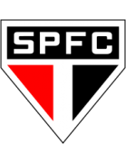 São Paulo Futebol Clube Form: WLDD Form: WWDD |
0.14 vs -1.0 | n/a | 21% | 0.5 | ⚽ 1.79 |
📉 Home team has a dip in form recently | 📉 Away team has a dip in form recently |
| Sun. 16 Jun. | FK Zalgiris Vilnius 2:1 FK Panevezys Form: WLWW Form: WDWW |
0.12 vs -0.88 | n/a | 20% | 1 | ⚽ 1.36 |
📉 Home team has a dip in form recently | 🏥 Away team has considerable injuries |
| Sun. 16 Jun. | Oita Trinita 0:2 Tochigi SC Form: LDWL Form: LDLW |
0.12 vs -1.05 | n/a | 20% | 0 | ⚽ 1.03 |
📉 Home team has a dip in form recently | 📉 Away team has a dip in form recently |
| Sun. 16 Jun. | Real Oviedo 1:0 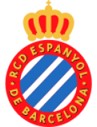 RCD Espanyol Barcelona Form: WLDW Form: DWWD |
-0.84 vs 0.12 | n/a | 19% | 0 | ⚽ 1.14 |
📉 Home team has a dip in form recently | |
| Sun. 16 Jun. | Shanghai Shenhua 1:1 Chengdu Rongcheng Form: WWWD Form: WLWD |
0.11 vs -0.75 | 1.91 | 19% | 0.5 | ⚽ 1.48 |
📉 Away team has a dip in form recently | |
| Sun. 16 Jun. | Orlando City SC 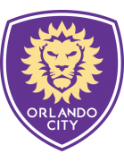 1:3 Los Angeles FC Form: LDLL Form: WWWW |
0.09 vs -0.81 | 2.8 | 17% | 0 | ⚽ 1.85 |
📉 Home team has a dip in form recently | |
| Sun. 16 Jun. | Rockdale Ilinden FC 4:0 Manly United FC Form: WWDL Form: DDDL |
0.08 vs -0.71 | n/a | 17% | 1 | ⚽ 1.65 |
📉 Home team has a dip in form recently | 📉 Away team has a dip in form recently |
| Sun. 16 Jun. | FC Tokyo 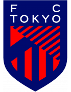 1:1 Júbilo Iwata Form: LLWD Form: WLLD |
0.08 vs -0.84 | 2.08 | 17% | 0.5 | ⚽⚽ 2.33 |
📉 Home team has a dip in form recently | 📉 Away team has a dip in form recently |
| Sun. 16 Jun. | Chungbuk Cheongju FC 1:1 Cheonan City Form: DWLD Form: LWWL |
0.07 vs -0.78 | n/a | 16% | 0.5 | 😴 0.83 |
📉 Home team has a dip in form recently | 📉 Away team has a dip in form recently |
| Sun. 16 Jun. | Seattle Sounders FC 2:0 Minnesota United FC Form: WWDL Form: LWDL |
0.07 vs -0.76 | 1.58 | 16% | 1 | ⚽ 1.99 |
🏥 📉 Home team has considerable injuries and a dip in form recently | 📉 Away team has a dip in form recently |
| Sun. 16 Jun. | Viimsi JK 3:1 Kalev Tallinn U21 Form: LWWD Form: LWLL |
0.07 vs -0.79 | 1.22 | 15% | 1 | ⚽⚽ 2.69 |
📉 Away team has a dip in form recently | |
| Sun. 16 Jun. | Östers IF 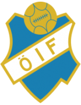 1:1 Östersunds FK Form: DWWL Form: LWWL |
0.06 vs -0.84 | n/a | 15% | 0.5 | ⚽ 1.54 |
📉 Home team has a dip in form recently | 📉 Away team has a dip in form recently |
| Sun. 16 Jun. | Nagoya Grampus 1:1 Shonan Bellmare Form: DWLD Form: LLWD |
0.06 vs -1.22 | n/a | 15% | 0.5 | ⚽ 1.72 |
🏥 📉 Home team has considerable injuries and a dip in form recently | 🏥 📉 Away team has considerable injuries and a dip in form recently |
| Sun. 16 Jun. | Don Bosco Garelli United 1:0 Philippine Air Force FC Form: LWLL Form: LLLW |
0.06 vs -0.73 | n/a | 15% | 1 | ⚽⚽⚽⚽⚽ 5.38 |
📉 Home team has a dip in form recently | 📉 Away team has a dip in form recently |
| Sun. 16 Jun. | Gamba Osaka 2:1 Kashiwa Reysol Form: WWWW Form: DLWL |
0.06 vs -0.88 | n/a | 14% | 1 | ⚽ 1.12 |
📉 Away team has a dip in form recently | |
| Sun. 16 Jun. | Club Athletico Paranaense 1:1 CR Flamengo Form: LLWD Form: WWWD |
-1.09 vs 0.06 | n/a | 14% | 0.5 | ⚽ 1.48 |
🏥 📉 Home team has considerable injuries and a dip in form recently | 🏥 Away team has considerable injuries |
| Sun. 16 Jun. | Sandvikens IF 2:0 IK Oddevold Form: WDWW Form: DLLD |
0.04 vs -0.47 | 2.16 | 13% | 1 | ⚽ 1.92 |
📉 Away team has a dip in form recently | |
| Sun. 16 Jun. | Hai Phong FC 3:1 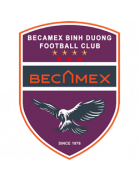 Becamex Binh Duong FC Form: WWLW Form: LLLL |
0.04 vs -0.74 | 1.7 | 13% | 1 | ⚽⚽ 2.02 |
📉 Home team has a dip in form recently | 📉 Away team has a dip in form recently |
| Sun. 16 Jun. | Danubio FC 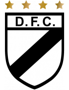 2:0 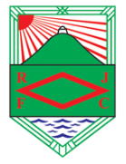 Rampla Juniors FC Form: DDDW Form: WWLD |
0.04 vs -0.87 | n/a | 13% | 1 | ⚽ 1.39 |
📉 Home team has a dip in form recently | 📉 Away team has a dip in form recently |
| Sun. 16 Jun. | Abia Warriors FC 2:0 Akwa United Form: LLDW Form: WWLW |
0.04 vs -0.93 | n/a | 13% | 1 | ⚽ 1.31 |
📉 Home team has a dip in form recently | 📉 Away team has a dip in form recently |
| Sun. 16 Jun. | Enugu Rangers IFC 2:0 Bendel Insurance Form: WDWL Form: DWDW |
0.04 vs -0.99 | n/a | 13% | 1 | 😴 0.82 |
📉 Home team has a dip in form recently | |
| Sun. 16 Jun. | Ha Noi FC 2:1 Cong An Ha Noi FC Form: WWWW Form: LLLL |
0.03 vs -0.86 | n/a | 13% | 1 | ⚽⚽ 2.29 |
🏥 📉 Away team has considerable injuries and a dip in form recently | |
| Sun. 16 Jun. | Vissel Kobe 1:0 Kawasaki Frontale Form: LDWW Form: DWWL |
0.03 vs -0.95 | n/a | 12% | 1 | ⚽⚽ 2.59 |
🏥 📉 Away team has considerable injuries and a dip in form recently | |
| Sun. 16 Jun. | Legon Cities FC 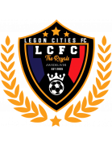 1:1 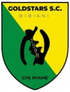 Bibiani Gold Stars FC Form: LWLD Form: WLWD |
0.03 vs -0.97 | n/a | 12% | 0.5 | ⚽ 1.28 |
📉 Home team has a dip in form recently | 📉 Away team has a dip in form recently |
| Sun. 16 Jun. | Daegu FC 1:0 Jeju United Form: LLWW Form: WWLL |
0.01 vs -1.12 | 2.34 | 11% | 1 | ⚽ 1.28 |
📉 Home team has a dip in form recently | 🏥 📉 Away team has considerable injuries and a dip in form recently |
| Sun. 16 Jun. | Lyn 1896 FK 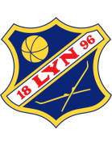 1:2 Sogndal IL Form: WLDW Form: LDWW |
0.0 vs -0.59 | n/a | 10% | 0 | ⚽⚽⚽ 3.1 |
📉 Home team has a dip in form recently | |
| Sun. 16 Jun. | Vancouver FC 0:0 Cavalry FC Form: WWLD Form: DDWD |
-0.01 vs -0.66 | 2.72 | 10% | 0.5 | ⚽ 1.55 |
📉 Home team has a dip in form recently | 📉 Away team has a dip in form recently |
| Sun. 16 Jun. | Ranheim IL 1:0 Raufoss IL Form: WLLD Form: WDLL |
-0.01 vs -0.52 | 1.87 | 10% | 1 | ⚽⚽ 2.21 |
📉 Home team has a dip in form recently | 📉 Away team has a dip in form recently |
| Sun. 16 Jun. | Botafogo FC 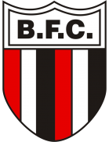 1:0 Vila Nova Futebol Clube (GO) Form: WWWW Form: LDWL |
-0.01 vs -0.81 | n/a | 10% | 1 | ⚽ 1.02 |
📉 Away team has a dip in form recently | |
| Sun. 16 Jun. | Clube de Regatas Vasco da Gama 0:0' Cruzeiro Esporte Clube Form: WLLD Form: WWLD |
-0.02 vs -0.89 | n/a | 10% | None | ⚽ 1.65 |
📉 Home team has a dip in form recently | 🏥 📉 Away team has considerable injuries and a dip in form recently |
| Sun. 16 Jun. | Suva FA 0:1 Ba FC Form: LLLW Form: WWDL |
-0.02 vs -0.48 | n/a | 10% | 0 | ⚽⚽ 2.28 |
📉 Home team has a dip in form recently | 📉 Away team has a dip in form recently |
| Sun. 16 Jun. | New York Red Bulls 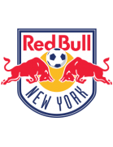 0:0 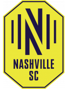 Nashville SC Form: WWLD Form: DWLD |
-0.02 vs -0.82 | 1.95 | 10% | 0.5 | ⚽⚽ 2.51 |
📉 Home team has a dip in form recently | 📉 Away team has a dip in form recently |
| Sun. 16 Jun. | Dreams FC 2:1 Aduana Stars FC Form: DLWW Form: WLDL |
-0.03 vs -0.8 | n/a | 9% | 1 | ⚽ 1.54 |
📉 Home team has a dip in form recently | 📉 Away team has a dip in form recently |
| Sun. 16 Jun. | APIA Leichhardt FC 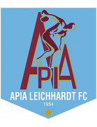 1:4 Marconi Stallions FC Form: WWLD Form: LWWW |
-0.03 vs -0.6 | n/a | 9% | 0 | ⚽⚽ 2.43 |
📉 Home team has a dip in form recently | |
| Sun. 16 Jun. | Sandnes Ulf 2:3 Mjøndalen IF Form: WLLL Form: LDDL |
-0.03 vs -0.83 | 2.46 | 9% | 0 | ⚽⚽ 2.63 |
📉 Home team has a dip in form recently | 📉 Away team has a dip in form recently |
| Sun. 16 Jun. | ÍF Fuglafjördur 0:3 NSÍ Runavík Form: DDLL Form: LWDL |
-0.5 vs -0.04 | n/a | 9% | 1 | ⚽⚽⚽ 3.84 |
📉 Home team has a dip in form recently | 📉 Away team has a dip in form recently |
| Sun. 16 Jun. | FC Dallas 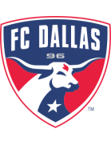 2:0 St. Louis CITY SC Form: LLDW Form: LLDD |
-0.04 vs -1.15 | 1.58 | 9% | 1 | ⚽ 1.73 |
🏥 📉 Home team has considerable injuries and a dip in form recently | 📉 Away team has a dip in form recently |
| Sun. 16 Jun. | Cangzhou Mighty Lions 0:1 Qingdao Hainiu Form: LLDL Form: LDWW |
-0.04 vs -0.81 | 3.3 | 9% | 0 | ⚽ 1.8 |
📉 Home team has a dip in form recently | |
| Sun. 16 Jun. | IFK Mariehamn 1:3 Kuopion Palloseura Form: WLDL Form: WWWL |
-0.55 vs -0.05 | n/a | 9% | 1 | ⚽⚽ 2.05 |
📉 Home team has a dip in form recently | 📉 Away team has a dip in form recently |
| Sun. 16 Jun. | Tampa Bay Rowdies 3:2 Louisville City FC Form: WWLW Form: WWWL |
-0.05 vs -0.67 | n/a | 9% | 1 | ⚽⚽ 2.8 |
📉 Home team has a dip in form recently | 📉 Away team has a dip in form recently |
| Sun. 16 Jun. | Memphis 901 FC 2:1 New Mexico United Form: WLDD Form: WWLW |
-0.06 vs -0.66 | 1.17 | 9% | 1 | ⚽⚽ 2.07 |
📉 Home team has a dip in form recently | 📉 Away team has a dip in form recently |
| Sun. 16 Jun. | Thespa Gunma 0:1 Renofa Yamaguchi Form: DDLL Form: WLWW |
-0.06 vs -0.7 | n/a | 9% | 0 | ⚽ 1.11 |
📉 Home team has a dip in form recently | 📉 Away team has a dip in form recently |
| Sun. 16 Jun. | Ulsan HD FC 2:2 FC Seoul Form: WDWD Form: LDWW |
-0.07 vs -0.74 | n/a | 9% | 0.5 | ⚽⚽ 2.48 |
📉 Home team has a dip in form recently | |
| Sun. 16 Jun. | Levanger FK 4:0 Aalesunds FK Form: DDLD Form: LWLD |
-0.08 vs -0.84 | n/a | 8% | 1 | ⚽⚽⚽ 3.35 |
📉 Home team has a dip in form recently | 📉 Away team has a dip in form recently |
| Sun. 16 Jun. | Moss FK 1:0 Bryne FK Form: WWWL Form: LWWL |
-0.08 vs -0.6 | n/a | 8% | 1 | ⚽ 1.64 |
📉 Home team has a dip in form recently | 📉 Away team has a dip in form recently |
| Sun. 16 Jun. | LPBank Hoang Anh Gia Lai FC 0:1 MerryLand Quy Nhon Binh Dinh FC Form: WLDL Form: LWWW |
-0.08 vs -0.55 | n/a | 8% | 0 | ⚽ 1.28 |
📉 Home team has a dip in form recently | |
| Sun. 16 Jun. | Athletic Club Taipei 0:4 Taiwan Leopard Cat FC Form: WDDW Form: LWWL |
-0.47 vs -0.09 | n/a | 8% | 1 | ⚽ 1.86 |
📉 Home team has a dip in form recently | 📉 Away team has a dip in form recently |
| Sun. 16 Jun. | Juventud de Las Piedras 1:3 Montevideo City Torque Form: WWLW Form: WDDL |
-0.66 vs -0.09 | n/a | 8% | 1 | ⚽ 1.65 |
📉 Home team has a dip in form recently | 🏥 📉 Away team has considerable injuries and a dip in form recently |
| Sun. 16 Jun. | AFA Olaine 17:00 Ogre United Form: LWDL Form: LWLW |
-0.09 vs -0.91 | n/a | 8% | None | ⚽ 1.29 |
📉 Home team has a dip in form recently | 📉 Away team has a dip in form recently |
| Sun. 16 Jun. | Bayelsa United 2:1 Shooting Stars Sports Club Form: LWDD Form: DWLW |
-0.1 vs -0.79 | n/a | 8% | 1 | ⚽ 1.5 |
📉 Home team has a dip in form recently | 📉 Away team has a dip in form recently |
| Sun. 16 Jun. | Chungnam Asan 0:0 Busan IPark Form: LWDW Form: WLLD |
-0.44 vs -0.1 | 2.3 | 8% | 0.5 | ⚽ 1.83 |
📉 Away team has a dip in form recently | |
| Sun. 16 Jun. | Roasso Kumamoto 0:1 Fagiano Okayama Form: WDLL Form: LDLW |
-0.64 vs -0.1 | n/a | 8% | 1 | ⚽ 1.99 |
📉 Home team has a dip in form recently | 📉 Away team has a dip in form recently |
| Sun. 16 Jun. | Sunshine Stars 2:1 Remo Stars FC Form: DWWW Form: LWLW |
-0.11 vs -0.78 | n/a | 8% | 1 | ⚽ 1.12 |
📉 Away team has a dip in form recently | |
| Sun. 16 Jun. | Iwaki FC 1:1 Ventforet Kofu Form: DLWD Form: LDWD |
-0.12 vs -0.67 | 2.28 | 8% | 0.5 | ⚽⚽ 2.22 |
📉 Home team has a dip in form recently | 📉 Away team has a dip in form recently |
| Sun. 16 Jun. | Colorado Rapids 2:0 Austin FC Form: LDLL Form: WDLL |
-0.12 vs -0.88 | n/a | 8% | 1 | ⚽ 1.84 |
📉 Home team has a dip in form recently | 📉 Away team has a dip in form recently |
| Sun. 16 Jun. | Nsoatreman FC 1:0 Nations Football Club Form: LDDW Form: LLDL |
-0.12 vs -0.65 | n/a | 8% | 1 | 😴 0.55 |
📉 Home team has a dip in form recently | 📉 Away team has a dip in form recently |
| Sun. 16 Jun. | Niva Dolbizno 3:1 BK Maxline Vitebsk Form: WWDW Form: LWLW |
-0.32 vs -0.13 | n/a | 7% | 0 | ⚽⚽⚽ 3.65 |
📉 Away team has a dip in form recently | |
| Sun. 16 Jun. | Nadroga FC 1:0 Navua FC Form: LWLL Form: LWWL |
-0.57 vs -0.13 | n/a | 7% | 0 | ⚽⚽ 2.39 |
📉 Home team has a dip in form recently | 📉 Away team has a dip in form recently |
| Sun. 16 Jun. | Cuiabá Esporte Clube (MT) 22:30 Fortaleza Esporte Clube Form: DWLW Form: WWLL |
-0.13 vs -0.64 | n/a | 7% | None | ⚽⚽ 2.99 |
📉 Home team has a dip in form recently | 📉 Away team has a dip in form recently |
| Sun. 16 Jun. | San Jose Earthquakes 2:4 FC Cincinnati Form: LLDL Form: WWLW |
-0.43 vs -0.14 | 1.64 | 7% | 1 | ⚽⚽ 2.81 |
📉 Home team has a dip in form recently | 🏥 📉 Away team has considerable injuries and a dip in form recently |
| Sun. 16 Jun. | Grêmio Foot-Ball Porto Alegrense 22:30 Botafogo de Futebol e Regatas Form: DLLL Form: WWDL |
-0.14 vs -0.7 | n/a | 7% | None | ⚽⚽ 2.3 |
🏥 📉 Home team has considerable injuries and a dip in form recently | 📉 Away team has a dip in form recently |
| Sun. 16 Jun. | FC RFS 2:2 Riga FC Form: WWDW Form: WWDW |
-0.14 vs -0.25 | n/a | 7% | 0.5 | ⚽ 1.85 |
||
| Sun. 16 Jun. | CA Fénix 3:1 Montevideo Wanderers Form: WWLL Form: WLWW |
-0.15 vs -0.57 | 1.1 | 7% | 1 | ⚽ 1.03 |
📉 Home team has a dip in form recently | 📉 Away team has a dip in form recently |
| Sun. 16 Jun. | FC Kuressaare 1:1 FC Nomme United Form: DLDL Form: DWDL |
-0.15 vs -0.59 | 1.86 | 7% | 0.5 | ⚽⚽⚽ 3.57 |
📉 Home team has a dip in form recently | 📉 Away team has a dip in form recently |
| Sun. 16 Jun. | Tailevu Naitasiri FC 2:4 Nadi FA Form: LLLW Form: LLDL |
-0.15 vs -0.74 | n/a | 7% | 0 | ⚽ 1.72 |
📉 Home team has a dip in form recently | 📉 Away team has a dip in form recently |
| Sun. 16 Jun. | Central Coast Mariners II 1:1 Sydney FC II Form: LDLL Form: LLWL |
-0.17 vs -1.19 | n/a | 7% | 0.5 | ⚽⚽⚽ 3.44 |
📉 Home team has a dip in form recently | 🏥🏥 📉 Away team has MAJOR injuries and a dip in form recently |
| Sun. 16 Jun. | Vegalta Sendai 2:2 V-Varen Nagasaki Form: WDLD Form: LDWD |
-0.48 vs -0.17 | n/a | 7% | 0.5 | ⚽⚽ 2.48 |
📉 Home team has a dip in form recently | 📉 Away team has a dip in form recently |
| Sun. 16 Jun. | Colorado Springs Switchbacks FC 4:2 Orange County SC Form: WWDW Form: LLWW |
-0.17 vs -0.26 | n/a | 7% | 1 | ⚽ 1.24 |
📉 Away team has a dip in form recently | |
| Sun. 16 Jun. | UCV Moquegua 1:0 Santos FC Nazca Form: LLLD Form: WLWL |
-0.68 vs -0.18 | n/a | 6% | 0 | 😴 0.71 |
📉 Home team has a dip in form recently | 📉 Away team has a dip in form recently |
| Sun. 16 Jun. | El Paso Locomotive FC 1:1 Phoenix Rising FC Form: LWDL Form: LLDW |
-0.18 vs -0.44 | 1.71 | 6% | 0.5 | ⚽ 1.7 |
📉 Home team has a dip in form recently | 📉 Away team has a dip in form recently |
| Sun. 16 Jun. | Zhetysu Taldykorgan 2:2 FC Zhenis Astana Form: WLDL Form: LLWL |
-0.18 vs -0.51 | n/a | 6% | 0.5 | ⚽ 1.32 |
📉 Home team has a dip in form recently | 📉 Away team has a dip in form recently |
| Sun. 16 Jun. | FC Astana 0:1 Ordabasy Shymkent Form: LLLW Form: WDDW |
-0.19 vs -0.52 | 2.36 | 6% | 0 | ⚽ 1.36 |
📉 Home team has a dip in form recently | 📉 Away team has a dip in form recently |
| Sun. 16 Jun. | Jiangxi Lushan 2:5 Suzhou Dongwu Form: LDLL Form: DDWW |
-0.53 vs -0.19 | 1.9 | 6% | 1 | ⚽⚽ 2.12 |
📉 Home team has a dip in form recently | |
| Sun. 16 Jun. | El Mokawloon SC 3:1 Tala'ea El Gaish Form: LLDW Form: DLWD |
-0.2 vs -0.63 | n/a | 6% | 1 | ⚽ 1.22 |
📉 Home team has a dip in form recently | 📉 Away team has a dip in form recently |
| Sun. 16 Jun. | Harju JK Laagri 6:0 Paide Linnameeskond U21 Form: WWDD Form: WLWL |
-0.2 vs -0.27 | n/a | 6% | 1 | ⚽⚽⚽ 3.25 |
📉 Home team has a dip in form recently | 📉 Away team has a dip in form recently |
| Sun. 16 Jun. | FC Samartex 2:0 Accra Lions FC Form: LWLW Form: WDWL |
-0.21 vs -0.66 | n/a | 6% | 1 | ⚽ 1.23 |
📉 Home team has a dip in form recently | 📉 Away team has a dip in form recently |
| Sun. 16 Jun. | Brusque Futebol Clube (SC) 1:0 Ceará Sporting Club Form: DDLW Form: WLLD |
-0.62 vs -0.21 | n/a | 6% | 0 | ⚽ 1.71 |
📉 Home team has a dip in form recently | 📉 Away team has a dip in form recently |
| Sun. 16 Jun. | Pakhtakor Tashkent 0:0 Navbahor Namangan Form: LWDL Form: DDDD |
-0.21 vs -0.36 | n/a | 6% | 0.5 | ⚽⚽ 2.16 |
📉 Home team has a dip in form recently | 📉 Away team has a dip in form recently |
| Sun. 16 Jun. | Club Atlético Tucumán 1:1 Defensa y Justicia Form: LDDD Form: LLDD |
-0.23 vs -0.92 | n/a | 5% | 0.5 | ⚽ 1.17 |
📉 Home team has a dip in form recently | 🏥🏥 📉 Away team has MAJOR injuries and a dip in form recently |
| Sun. 16 Jun. | Qingdao West Coast 0:1 Wuhan Three Towns Form: LDLL Form: LLWL |
-0.23 vs -0.44 | n/a | 5% | 0 | ⚽⚽ 2.15 |
📉 Home team has a dip in form recently | 📉 Away team has a dip in form recently |
| Sun. 16 Jun. | New England Revolution 3:2 Vancouver Whitecaps FC Form: LLWW Form: LLWW |
-0.24 vs -0.64 | n/a | 5% | 1 | ⚽⚽⚽ 3.22 |
🏥 📉 Home team has considerable injuries and a dip in form recently | 📉 Away team has a dip in form recently |
| Sun. 16 Jun. | Yanbian Longding 2:2 Guangzhou FC Form: WLLD Form: LWWL |
-0.38 vs -0.27 | 2.98 | 5% | 0.5 | ⚽⚽ 2.65 |
📉 Home team has a dip in form recently | 📉 Away team has a dip in form recently |
| Sun. 16 Jun. | Regar-TadAZ Tursunzoda 0:1 Ravshan Kulob Form: WWLW Form: WLLW |
-0.3 vs -0.63 | n/a | 4% | 0 | 😴 0.56 |
📉 Home team has a dip in form recently | 📉 Away team has a dip in form recently |
| Sun. 16 Jun. | IK Start 4:3 Stabæk Fotball Form: LWDL Form: LLWW |
-0.52 vs -0.3 | n/a | 4% | 0 | ⚽⚽ 2.03 |
📉 Home team has a dip in form recently | 📉 Away team has a dip in form recently |
| Sun. 16 Jun. | Philadelphia Union 1:2 Inter Miami CF Form: DDDL Form: LDWW |
-0.89 vs -0.34 | 2.32 | 3% | 1 | ⚽⚽⚽ 3.56 |
📉 Home team has a dip in form recently | 🏥🏥 Away team has MAJOR injuries |
| Sun. 16 Jun. | Criciúma Esporte Clube 2:1' Esporte Clube Bahia Form: LWDW Form: LDWD |
-0.34 vs -0.41 | n/a | 3% | None | ⚽⚽ 2.9 |
📉 Away team has a dip in form recently | |
| Sun. 16 Jun. | CF Montréal 0:0 Real Salt Lake City Form: DWDD Form: WDDW |
-0.36 vs -0.56 | 2.4 | 3% | 0.5 | ⚽⚽ 2.43 |
📉 Home team has a dip in form recently | 📉 Away team has a dip in form recently |
| Sun. 16 Jun. | Esporte Clube Vitória 2:1 Sport Club Internacional Form: LDDW Form: LDWW |
-0.49 vs -0.36 | n/a | 3% | 0 | ⚽ 1.79 |
📉 Home team has a dip in form recently | 🏥🏥 Away team has MAJOR injuries |
| Sun. 16 Jun. | Bechem United FC 2:3 Hearts of Oak Form: LWDL Form: LWDW |
-0.39 vs -0.38 | n/a | 2% | 1 | ⚽ 1.07 |
📉 Home team has a dip in form recently | |
| Sun. 16 Jun. | Tacuarembó FC 19:00 La Luz FC Form: WLDL Form: LWLW |
-0.38 vs -0.63 | n/a | 2% | None | ⚽ 1.68 |
🏥 📉 Home team has considerable injuries and a dip in form recently | 📉 Away team has a dip in form recently |
| Sun. 16 Jun. | Goiás EC 1:1' Coritiba Foot Ball Club Form: LWLD Form: LWDW |
-0.38 vs -0.58 | n/a | 2% | None | ⚽ 1.74 |
📉 Home team has a dip in form recently | 🏥 Away team has considerable injuries |
| Sun. 16 Jun. | Ayacucho FC 21:00 Deportivo Binacional Form: LLWL Form: WLWW |
-0.56 vs -0.44 | n/a | 1% | None | ⚽⚽ 2.18 |
📉 Home team has a dip in form recently | 📉 Away team has a dip in form recently |
| Sun. 16 Jun. | Toronto FC 1:4 Chicago Fire FC Form: LDDL Form: LDDW |
-0.65 vs -0.55 | n/a | 0% | 1 | ⚽ 1.93 |
🏥🏥 📉 Home team has MAJOR injuries and a dip in form recently | 📉 Away team has a dip in form recently |
Last updated 12:48:38 2024-06-23
Privacy Policy - 18+. Gamble Responsibly. - Terms